Argues for composing many small, permission-limited domain-specific agents (coordinator + sub-agents talking in plain English) instead of inheriting more skills/MCP servers/context onto one large agent
This traces the speaker's case that skill/MCP inheritance breaks down at scale, motivating a composition model of small coordinated agents that he claims are cheaper and more token-efficient (ours).
“it comes down to integration. Businesses want their data properly integrated into AI. They They believe, and are probably right, that if they appropriately leverage AI, they're going to have these dramatic gains”
said at 04:06“if I try to pass it off to somebody else, there's a very high likelihood that between all of the environment variable configurations and and system requirements and and runtimes, there's a good chance it's not going to run on that person's machine”
said at 06:42“Eventually, inheritance starts to break down. Imagine, like, you know, okay, I've got five skills on uh ChatGPT or on or on Claude, excuse me. And uh that works pretty well. Now, what if I have 100 skills?”
said at 12:28“each of them is a separate isolated agent, a full agent. Not just a little server with tools on it. It's a full agent with its own message history, its own agentic loop”
said at 14:01“they are far more token efficient. Far more token efficient. We regularly see over 80% token efficiency for any given task”
said at 16:45“the cost difference is mind-boggling. It is 137 times cheaper than Fable per task”
said at 18:10“we are going to see a dramatic uptick in people talking about building domain-specific agents, frameworks around them”
said at 20:50“They're up 29% when you adjust for IQ just this year, halfway through the year, we're already up 30%”
said at 22:52The 137x DeepSeek-vs-Fable figure is presented without benchmark methodology (no task type, no accuracy floor) -- it should be treated as a directional cost-ratio claim rather than a verified number until a source study is found (ours).
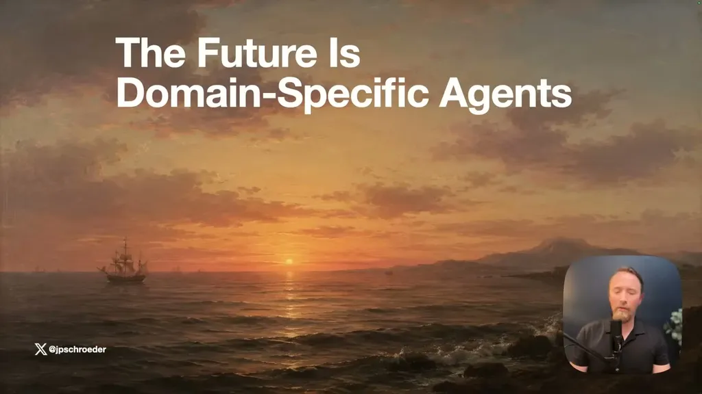
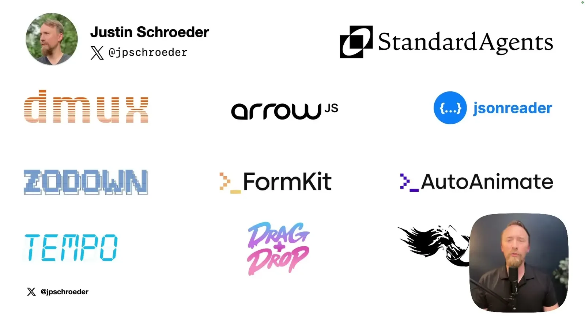
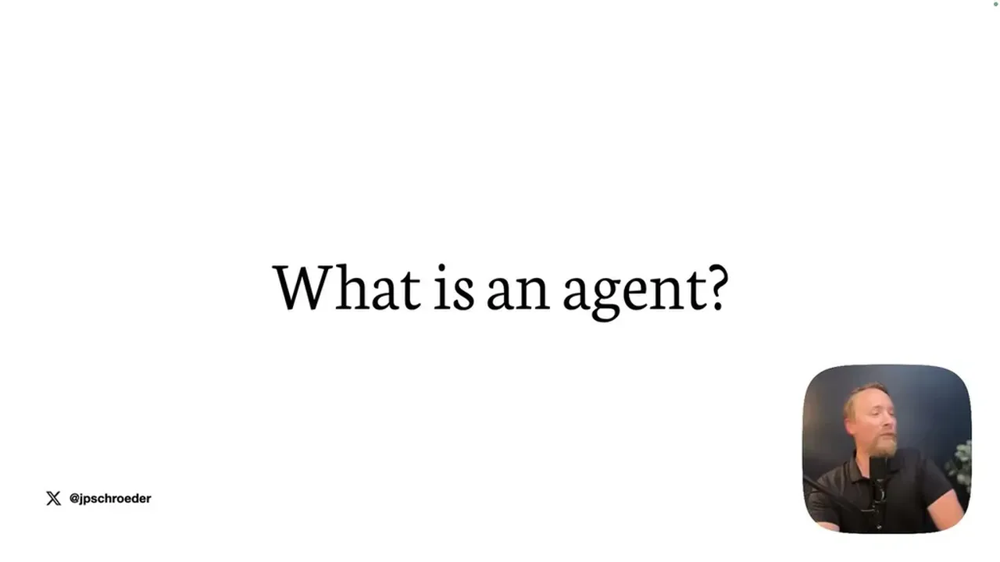
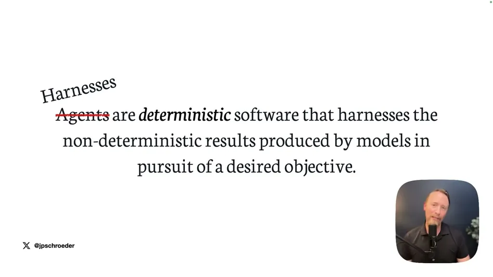
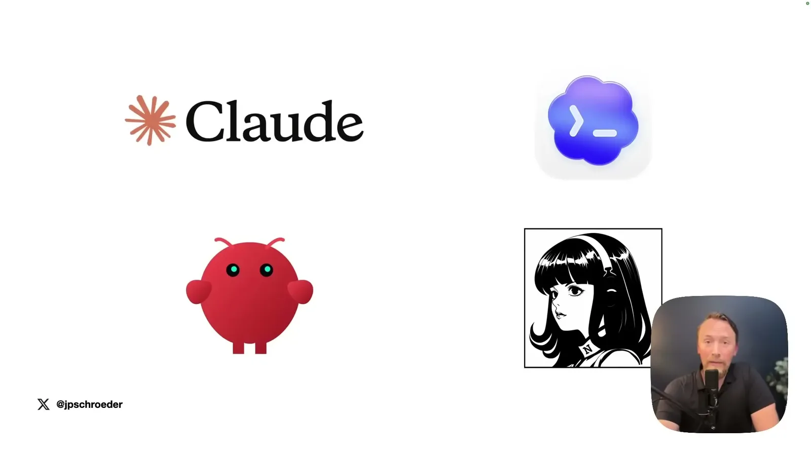
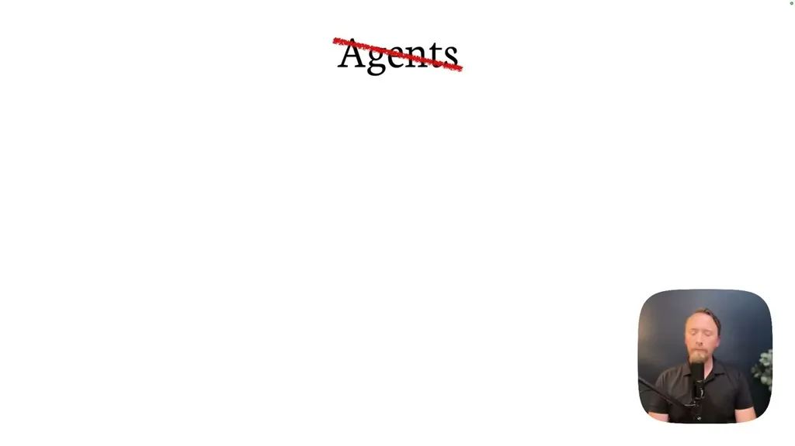
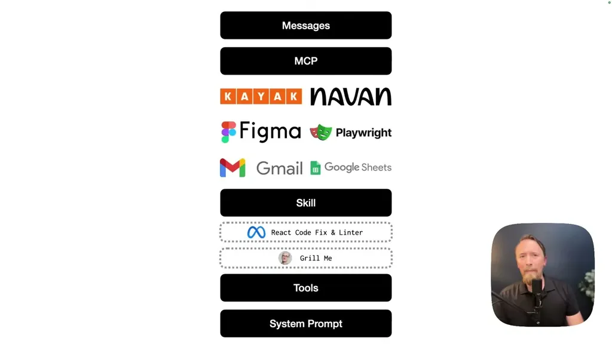
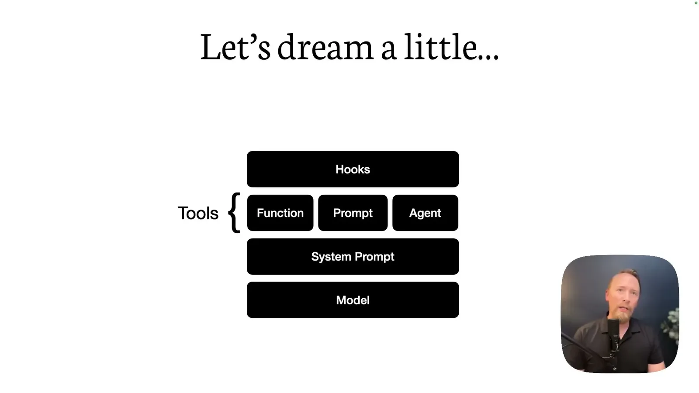
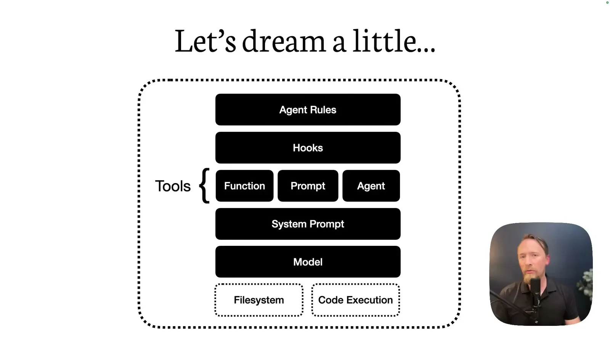
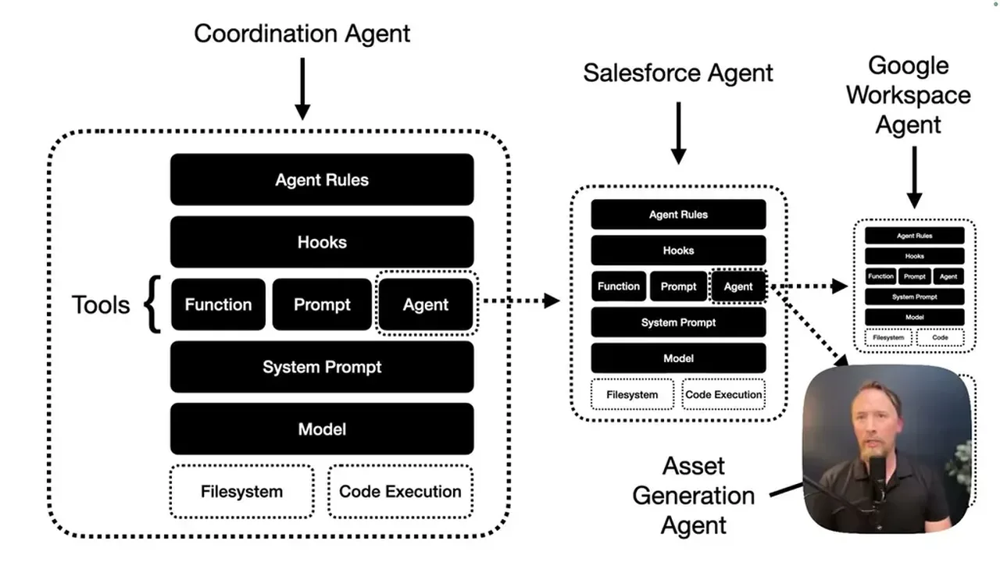
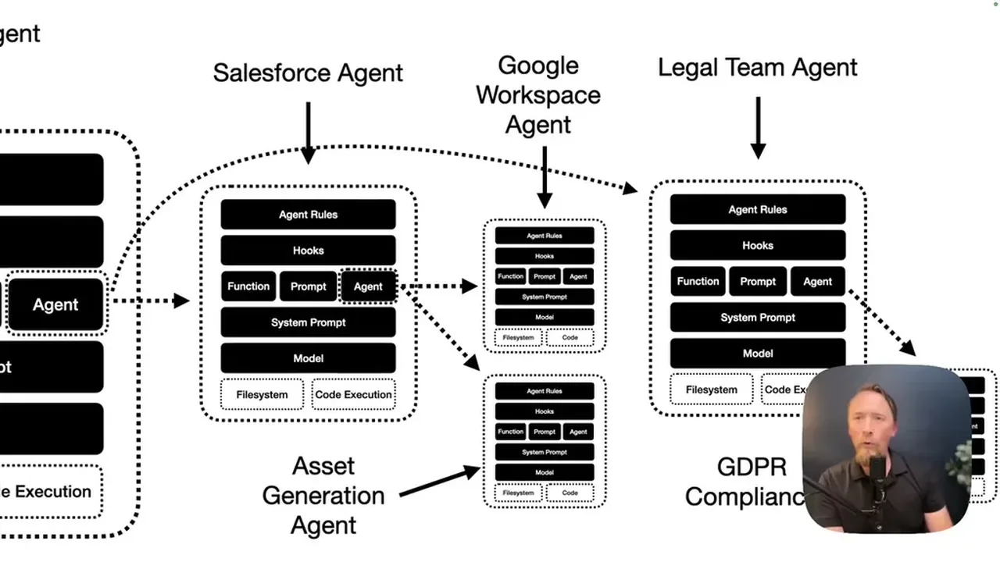
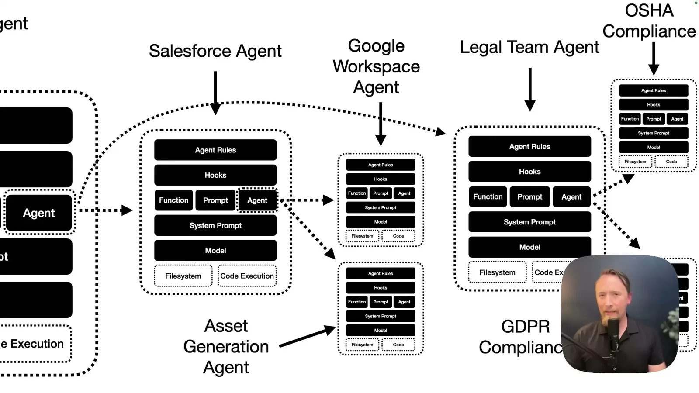
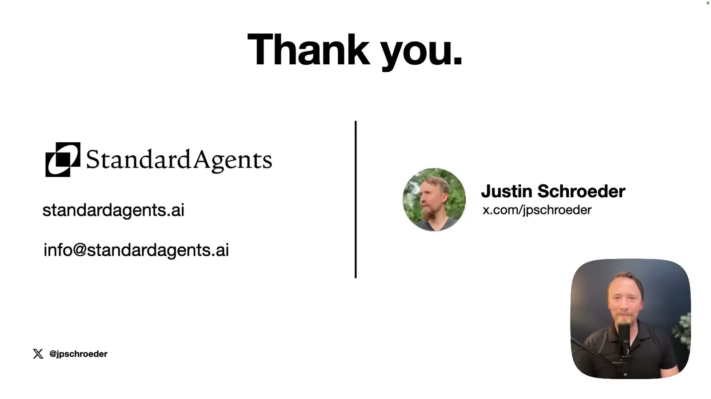
| Stance | Claim | t |
|---|---|---|
| asserts | Businesses build custom agents primarily because they want their own data properly integrated into AI, not because AI access itself is scarce. | 04:06 |
| warns | A working custom agent is often not portable to another machine due to environment variable and runtime configuration differences. | 06:42 |
| warns | Adding skills/MCP to an agent is software inheritance, and inheritance eventually produces diminishing returns as the number of skills grows. | 12:28 |
| recommends | Instead of one agent inheriting a Figma skill, a small standalone Figma agent with its own system prompt, tools, and message history should be coordinated by a top-level agent via plain English. | 14:01 |
| asserts | Domain-specific agents regularly achieve over 80% token efficiency for a given task compared to a single inherited-context agent. | 16:45 |
| asserts | DeepSeek V4 Flash is 137 times cheaper than Fable 5 per task, which domain-specific agents can exploit because narrow tasks don't need a frontier model. | 18:10 |
| predicts | Domain-specific agents will see a dramatic uptick in adoption/discussion through the rest of 2026, with 2027 becoming the year of multi-agent orchestration. | 20:50 |
| asserts | Token costs adjusted for IQ are up 29% and unadjusted up 76% so far in 2026, reversing the trend of falling intelligence costs. | 22:52 |
Machine-readable copy embedded in this page (script#ontology) and in the corpus ontology.